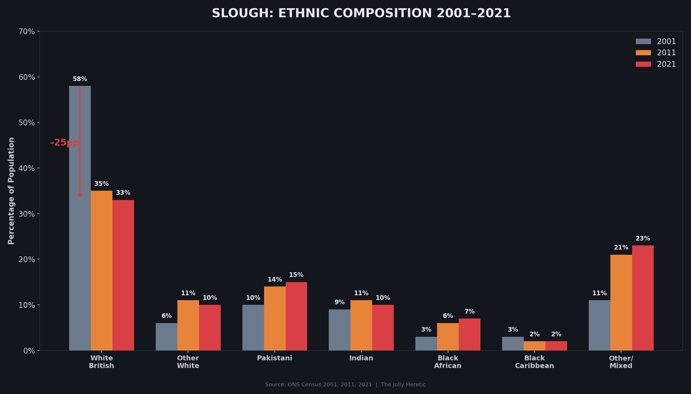
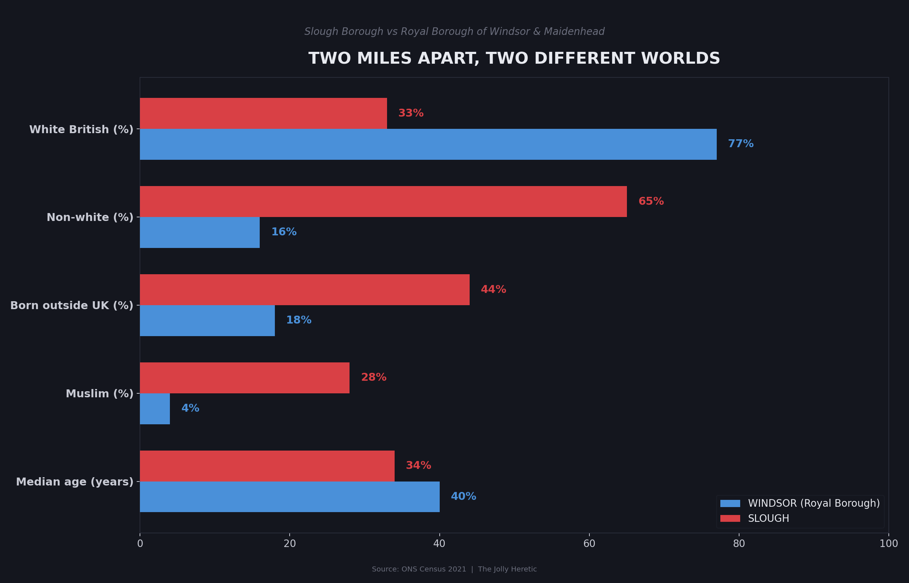
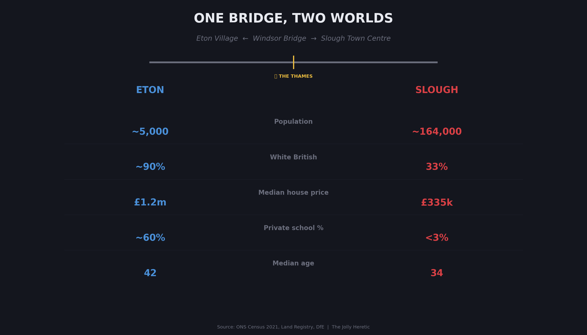
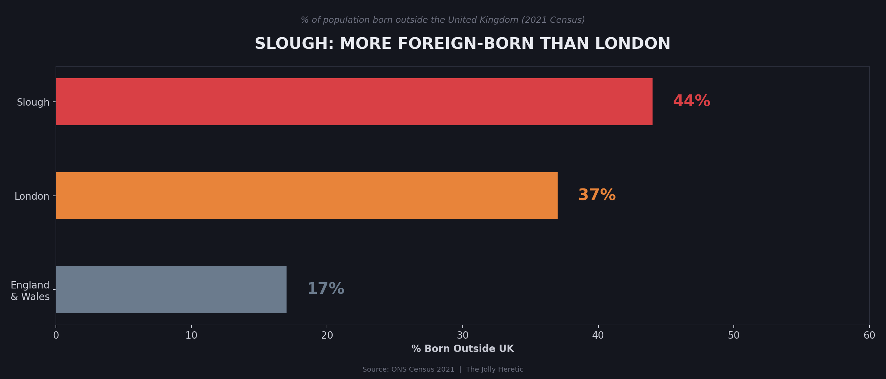

☑ Prep Progress
0/0
The Crew
🎧
Lap
Guest / On-Camera
NYC → London • Feb 28
🎥
Matthew
Producer / Camera
Antalya → London • Mar 1
🎓
Ed Dutton
Presenter
Oulu → London • Mar 1
💼
George
Manager
Arrives London • Mar 1
Day by Day
🌎
Sunday, Mar 1
Everyone Arrives in London
Throughout the day
Crew assembles in London
Ed arrives from Oulu via Heathrow — stays at his parents' in New Malden. George arrives and stays nearby. Matthew arrives from Antalya. Lap already in London (arrived Feb 28).
ED
GEORGE
MATT
LAP
TRAVEL
Evening
Free evening — early night
Dinner in London. Early night — big filming day tomorrow.
LAP
MATT
🎬
Monday, Mar 2
Filming Day 1 — Slough
All Day • Hard wrap by 5–6pm
Documentary #1 — "The View From the Castle" (Slough)
Full day filming across Windsor, Eton & Slough. The Long Walk, Windsor Castle walls, Eton High Street, the bridge walk, Slough town centre. Must wrap by 5–6pm so Ed can make dinner with his daughter in London.
ED
MATT
LAP
GEORGE
FILMING
~6pm onwards
Ed → Dinner with daughter (London)
Ed heads off for family dinner. George, Matthew, and Lap stay at London hotel.
GEORGE
MATT
LAP
HOTEL • LONDON
🎓
Tuesday, Mar 3
Andrew Gold Interview & Oxford
Daytime
Ed interviews with Andrew Gold
Ed does an interview in North London with Andrew Gold. George, Matt, and Lap can head to Oxford early or explore London.
ED
Afternoon
Everyone converges on Oxford
Ed heads to Oxford after the interview — likely via King's Cross St Pancras (~1hr train). Crew makes their way to Oxford independently.
ED
MATT
LAP
GEORGE
TRAVEL
Evening
Secret Society Dinner & Speech
Ed has a dinner engagement and gives a speech at a secret society in Oxford. Matthew attends post-dinner.
ED
MATT
Night
Oxford Hotel
George, Matthew, and Lap stay overnight in Oxford.
GEORGE
MATT
LAP
HOTEL • OXFORD
🎬
Wednesday, Mar 4
Filming Day 2 — Oxford
All Day
Documentary #2 — "The Grooming Gang City" (Oxford)
Full day filming: Radcliffe Camera to Cowley Road walk, Nanford Guest House site, Shotover Woods, vox pops. Possible segment: masked student interviews from secret society contacts.
ED
MATT
LAP
GEORGE
FILMING
Evening • ~1hr 15min drive
Drive to Luton & check in
Oxford → Luton via M40/M25/M1. Check into hotel for early 07:00 start Thursday. Suggestion: Premier Inn Luton Town Centre or Hampton by Hilton (airport).
ED
MATT
LAP
GEORGE
HOTEL • LUTON
🎬
Thursday, Mar 5
Filming Day 3 — Luton
07:00 – 18:00 • Full Day
Documentary #3 — "The Death of a Factory Town" (Luton)
Full day shoot: Vauxhall plant site (07:45–11:30), Bury Park walking footage (12:00–14:00), drive to Dunstable (14:00–15:00), Dunstable vox pops (15:00–16:00), closing money shot at golden hour with airport + empty factory (17:00–17:45). See full schedule in the Luton doc card below.
ED
MATT
LAP
GEORGE
FILMING
After wrap ~18:00
Crew disperses
Ed heads back to London. George goes to London hotel (flies home Friday). Lap and Matthew stay together — potentially onward to Europe.
ED
GEORGE
MATT
LAP
TRAVEL
☀️
Friday, Mar 6
Wrap — George flies home
Morning
George flies home
George heads to the airport from London and flies home. That's a wrap on the production crew.
GEORGE
TRAVEL
TBD
Lap & Matt → onward plans TBD
With filming wrapped, Lap and Matthew potentially fly somewhere warm in Europe for a few days.
LAP
MATT
ADVENTURE
The Three Documentaries
Documentary I • Monday, Mar 2
The View From the Castle
Windsor Castle looks directly down on Slough. Two civilisations separated by a dual carriageway.
Data graphics for post-production overlays or PTC reference.


Slough ethnic composition across three census periods (2001, 2011, 2021). White British: 58% → 33%.
Two miles apart, two different worlds: Slough Borough vs Royal Borough of Windsor & Maidenhead.
White British population decline — 72% (1991) to 33% (2021), projected ~25% by 2031.
One bridge, two worlds: Eton Village vs Slough Town Centre stat comparison.
44% of Slough residents were born outside the UK — higher than London (37%).
Documentary II • Wednesday, Mar 4
The Grooming Gang City That Nobody Mentions
Oxford: Where the brand of the university shields the city from scrutiny
Documentary III • Thursday, Mar 5
The Death of a Factory Town
Luton: Deindustrialisation, demographic change, and the unmaking of an English town
General Prep & To-Do